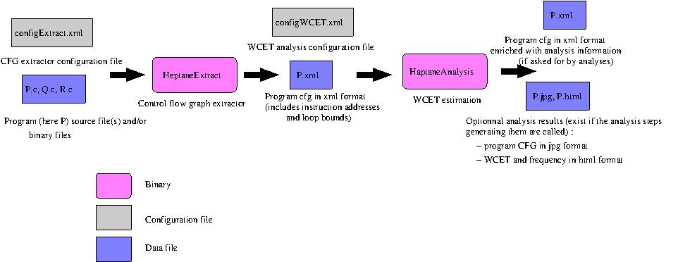

To be executed, Heptane needs the following software,
that will NOT be installed by the Heptane's installation software:
Integer Linear Programming (ILP) solver. Heptane may
use lp_solve
(free) or CPLEX (commercial). The binary of one of these
two solvers has to be installed and be accessible in your PATH (the
binaries should be named lp_solve and cplex)
graphviz
(optional). Used to display CFGs. dot has to be
installed and be accessible from your PATH
doxygen
(optional). In case you want documentation to be
generated from the Heptane source code
The following other software are also required, but will
be installed (if asked for) by the Heptane's installation script:
CFG (control flow graph) management library cfglib.
This library is heavily used by Heptane to manipulate the program CFGs.
Cross-compilation toolchain. Heptane supports the
mips and arm ISA (the powerPC is not supported anymore). The Mips
cross-compiler toolchain (compiler, binutils) will be installed if asked
for during the Heptane's installation script.
Installation script (for new users, recommended)
The installation script install.sh is located at the root of the
Heptane's archive.
Before running it, first set up the installation parameters to specify
what you want to compile and installed
CROSS_COMPILER_MIPS_INSTALL=1 : install a Mips cross-compiler toolchain
CROSS_COMPILER_ARM_INSTALL=1 : install a Arm cross-compiler toolchain
HEPTANE_CFGLIB_INSTALL=1 : install the CFG manipulation library
HEPTANE_CORE_INSTALL=1 : install Heptane itself
SCRIPT_CONFIG_INSTALL=1 : install the Heptane's xml configuration
files used by the HeptaneExtractor and HeptaneAnalysis with correct
links to cross-compiler toolchain
Run the installation script
The Heptane binaries will be installed in directory bin
Manual installation (for experienced users)
CFG (control flow graph) management library cfglib.
This library is heavily used by Heptane to manipulate the program CFGs.
Finding cfglib: the source code is in directory cfglib
Compiling cfglib
In GNUmakefile, set DESTDIR to the place where the library
should be installed
make
make install
Cfglib heavily uses the libxml2 library, that has to be installed
before using Heptane
Cross-compilation toolchain. Heptane supports the
mips and powerPC ISA. A cross-compiler toolchain (compiler, binutils)
should be installed
Cfglib. CFG manipulation
library
Go to src/cfglib
make; make install
Heptane. HeptaneExtractor and
HeptaneAnalysis
cd src
Build a makefile.common file as follows:
CONFIG=LINUX/MACOS to select your host operating system
TARGET=MIPS/PPC to select your target architecture
ADDR2LINE=bsolute path of the addr2line binary (addr2line is a
binary included in the binutils to retrieve information on line
numbers in source code on binaries compiled with the -ggdb option).
addr2line is useful by one analysis (the one showing the frequency
of code lines on th WCEP at the source code level). Installation of
addr2line is not useful if you do not use this analysis step.
end of makefile.common: can be found in directory
template/makefile.common.template
Type make. Automatically installs the binaries into directory bin
Running

Running the HeptaneExtractor
HeptaneExtract configExtract.xml. An example of shell script
to generate CFGs is available in src/templates/extract.sh.template
configExtract.xml is the HeptaneExtractor configuration file
allowing to configure the tool (location of cross-compiler toolchain,
selection of CFG extraction output). An example of xml file used by the
Heptane extractor is available in directory
src/templates/configExtract.xml.template. Shell script install.sh, from
this template, generates a ready to use configuration file in directory
config_files.
Ready to use programs are available in directory benchmarks/BENCH,
with BENCH a set of subdirectories containing the program source codes
and CFGs in xml format
The HeptaneExtractor generates an xml file containing the CFG of all
functions called by the program entry points, with attributes attached
to the CFGs, loops, basic blocks, etc. (loop bounds, addresses of
instructions mainly). The xml file is used by the WCET analysis steps.
configfile.xml is a configuration file in xml format (see src/templates/configWCET.xml.template
or an example). Shell script install.sh, from this template, generates a
ready to use configuration file in directory config_files.
An example of analyses called without
a configuration file is also given in file HeptaneAnalysis/Analysis/main.cc.
Constraints on code structure
Use of function pointers
Indirect calls, due to switch tables or use of pointers on functions are
not currently supported, because they do not allow the Cfg to be
constructed. Currently, the HeptaneExtractor just emits a warning when
encountering indirect calls. For indirect calls, the HeptaneExtractor
produces an empty Cfg as called function. Future extensions will allow at
least to annotate the possible points pointer targets.
Calls to external functions (e.g. library code)
When encountering a call to an Cfg contained in none of the analysed
files, the HeptaneExtractor tags the called Cfg as "External" and emits a
warning. An empty Cfg structure, whose name is the one of the called
function is created. In future extensions, there will be a way to attach
informations, such as the WCET of the called function, to the Cfg, using
annotations.
Loop annotations
Annotations serve at giving maximum number of iterations for loops. The
given values are constants. A loop maxiter specifies the maximum number of
iterations any basic block in the loop body executes. A loop
maxiter is local in the sense the number of iterations expresses
the maximum number of iterations in the context of the upper loop (if any)
or function (otherwise). There are two ways of providing loop bounds:
In the C source code: ANNOT_MAXITER(10);
In an external annotation file. The annotation file gives for every
CFG a description of the loop nesting and maxiters. Loops should apprear
in the same order than in the compiled code (this is checked by the WCET
estimation tool). Be careful to compiler optimizations that may change
the number / ordering of loops. An example of annotation file for the
fft benchmark is given in file fft.annot.xml.
Analysis XML format
XML for control flow graph
The DTD of the XML format used by analysis steps is available in this
directory (file cfglib.dtd). The first
part of the file define the CFG format (program, cfg, node, loop, etc).
The second part of the file defines the XML format of non-built-in
attributes.
To check an existing XML against the DTD: type xmllint --path
path_to_this_directory --valid name_of_file_to_be_checked > /dev/null
The DTD of the XML format used for annotations (loop bounds) is available
in this directory (file annot.dtd). An
example of annotation file is avaiable for the fft benchmark (fft.annot.xml).
Hierarchy of sources
GNUMakefile and makefile.common. Used to configure, compile and
install the WCET analysis tool
HeptaneAnalysis: source code for WCET estimation tool
GNUmakefile: compilation of WCET estimation tool
GlobalAttributes: attributes shared between the HeptaneExtractor
and WCET analyzer
ArchitectureDependent: all architecture-dependent code for CFG
extraction and retrieval of information on instructions
Generic: analysis-independent code
Config.cc/h: reading of configuration file + execution from
the analyses steps given in configuration file
Analysis.cc/h: class defining the methods to be implemented to
achieve a WCET analysis step + usefuls methods for every
analysis
Logger.cc/f: class for managing warnings and errors inside
Heptane
CallGraph.cc/h: call graph manipulation
LoopTree.cc/h: loop nest manipulation
Timer.cc/h: management of timers
Context.cc/h: management of call contexts
SharedAttributes: types and code of attributes shared between
analysis steps of WCETanalysis
SharedAttributes.h: naming conventions and interface of all
attributes
StackAddressAttribute.h: interface of StackAddressAttribute,
generated by the stack analyser
CodeLineAttributes.h: source code line information
Specific: source code for analysis steps (see embedded
documentation for further details). Some analyses may not be listed
here. See the source code for an exhaustive list of analyses (one
directory per analysis)
CacheAnalysis: cache analyser
PipelineAnalysis: pipeline analysis
DataAddressAnalysis: data address and stack analyser (only for
MIPS target)
IPETAnalysis: WCET computation using ILP (lp_solve or CPLEX)
CodeLine: attachs code lines to basic blocks and instructions
HtmlPrint: prints the critical path at source code level
DotPrint: graphical printing of CFG using dot
SimplePrint: text printing of CFGs on standard output
main.cc: user-provided C++ source file calling the different
analysis steps
HeptaneExtract : source code for CFG extraction
ConfigExtract.cc/h: management of the extractor configuration file
Annotations.cc/h: management of annotations
dominatorAnalysis.cc/h: computation of domination information for
loop extraction
TODO.txt: describes the current status of the analysis steps
Calling existing analysis steps
The normal usage of Heptane is to fill-in a configuration file that
contains architecture and analysis parameters. File Config.cc scans this
file and applies the analyses in the order specified by the file.
An alternative way of using Heptane (used mainly by Heptane developpers
when debugging the code) is to call analysis steps by program. Class
Analysis, from which all analyses are derived, implements the methods to
be called to apply one analysis. An example of call to the analysis steps
is provided in file main.cc. To call an analysis step, you have to :
Create an object that implements the requested analysis pass (e.g.
IPETAnalysis). Parameters to the class constructor are step-specific and
init the analysis parameters
Call the main analysis method on the object
Adding a new analysis method/analysis step
To add a new analysis:
Create a new directory for the analysis in directory Specific,
with a directory name MyNewAnalysis as explicit as possible
Create a class inheriting from Analysis. Analysis defines
the main analysis steps (checking of serialisable input attributes,
analysis itself, removal of non serialisable attributes). All three
methods have to be implemented:
Checking the presence of serialisable input attributes is
mandatory. It allows to check as soon as possible that all analysis
inputs are available
The analysis method itself is unavoidable
The removal of internal non-serialisable attributes is very
important to reduce memory consumption and to avoid further analysis
steps to reuse the same attribute names.
If the analysis produces a new attribute type, define the attribute
name and interface in file Analysis/SharedAttributes/SharedAttributes.h
(see the definition of the other attribute types as examples). To be
able to check the XML against the WCET analysis framework DTD, add a
description of yout attribute in file cfglib.dtd
(see Analysis XML format above). If the attribute is
serializable, add it in the attribute factory (see
Analysis/Generic/WCETanalysis.cc)
Modify file Analysis/main.cc such that the newly introduced
analysis method/step is called.
Modify file Analysis/Generic/Config.cc/h to create a format
for the analysis parameters (for calls through the configuration file).
Doxygen embedded documentation
Comments embedded in source code and extracted using doxygen are
available.
Unmaintained code
Some analysis steps have been recently removed from the Heptane trunk
to keep the source code as small as possible. Among removed functions:
CRPD estimation
Analysis of single usage blocks (RTSS09) and cache bypass